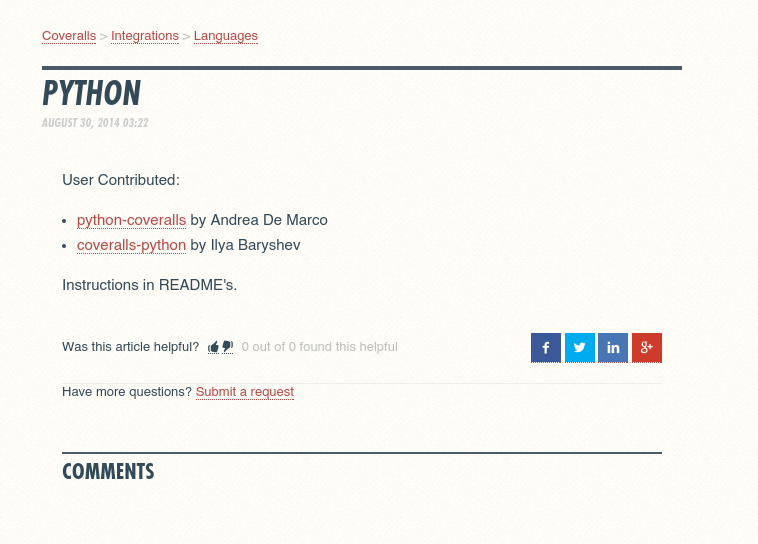
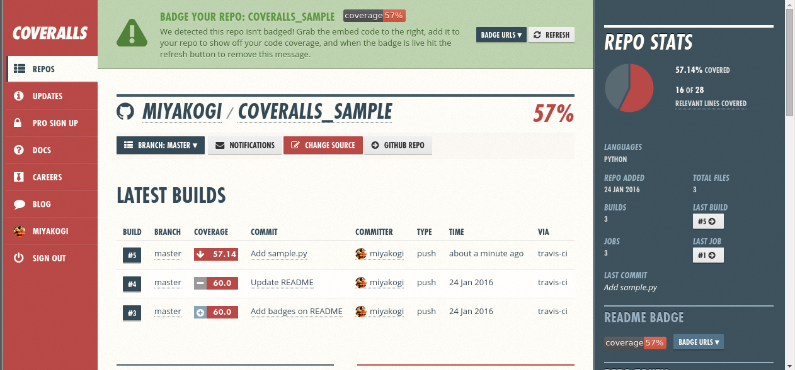
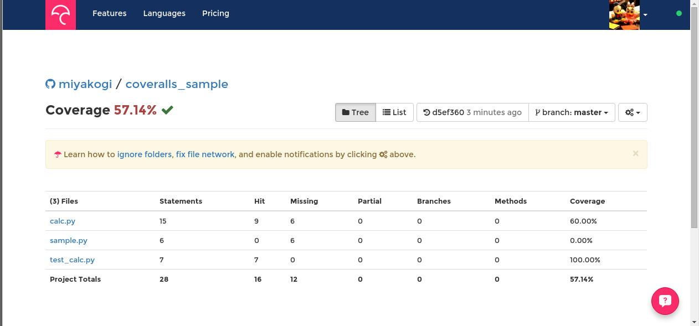
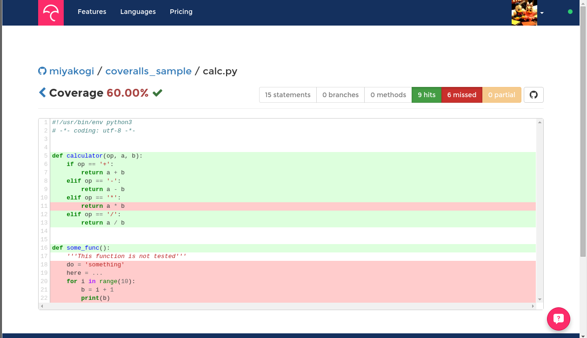
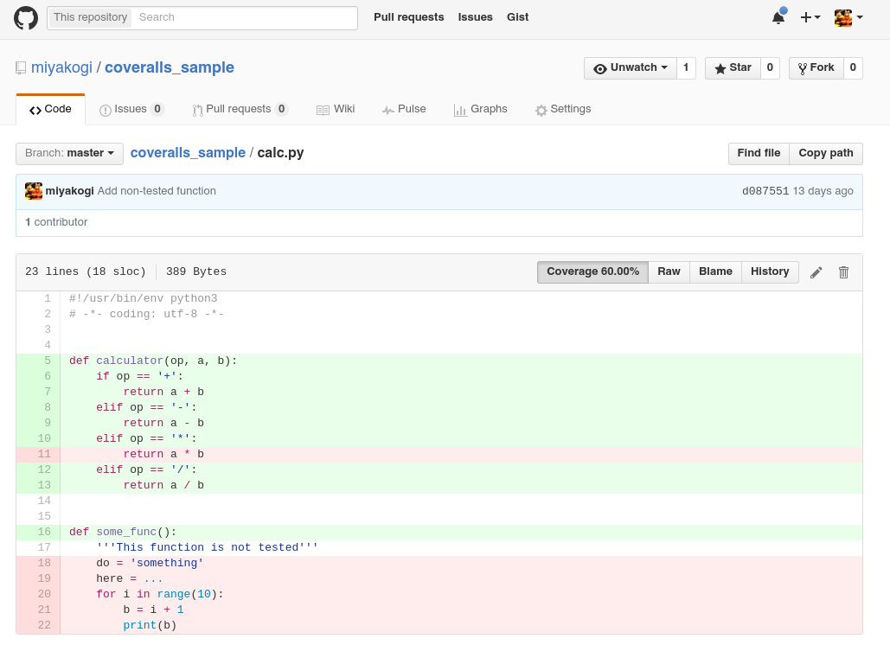
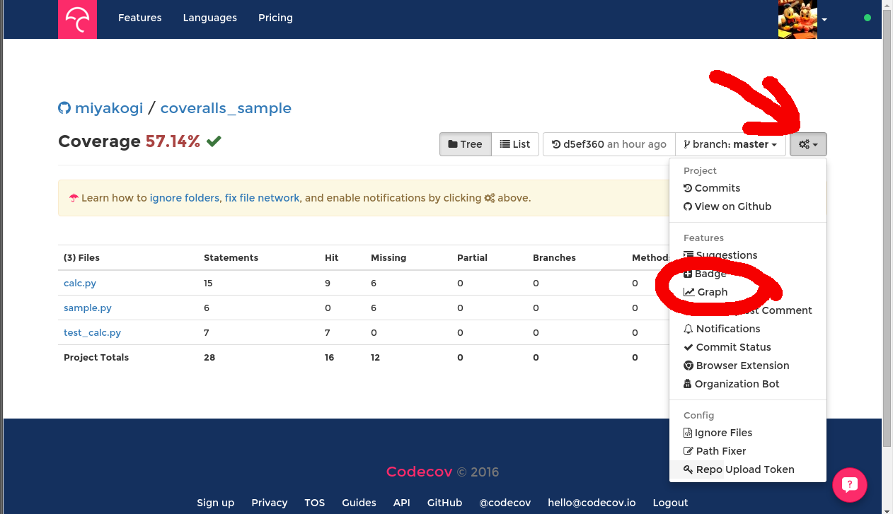

カバレッジ取得サービスの比較（Coveralls.ioとCodecove.io)
※ 注意：この記事には主観とグチが含まれています。
コードのカバレッジ取得サービスを調べてみました。Coveralls.ioとCodecov.ioの比較です。
↓こんな感じのバッジがREADMEに表示されるやつです。

TravisCIなどで自動テストを行い、ついでにテストのカバレッジも取得している方は多いと思います。 カバレッジを取得できるCIサービスだと coveralls を使っているプロジェクトが多いようですが、自分が試した時はなんか反応が鈍かったりgithubのリポジトリの更新が上手く反映されなかったり...とあまりいい印象がなかったので、他のサービスも試して比べてみました。他というかCodecovしか試してませんが。CodecovはSideCIさんのブログ記事で知りました。ありがとうございます。
結論：Codecovいい感じ！おすすめですよ！
利用方法
どちらも公開リポジトリは無料です。プライベートリポジトリは有料プランになります。
公開リポジトリの使い方はどちらも大差ありません。Githubのアカウント連携で認証して、連携したいリポジトリを指定して、Travisとも連携してテスト後にそれぞれのサービス向けに用意されているコマンドを叩くだけです。Travis + Pythonの場合、.travis.ymlに以下のように設定します。
install: - pip install pytest pytest-cov - pip install coveralls codecov script: - py.test --cov [module or package] after_success: - coveralls - codecov
インストールの二行目で両方のサービス用のパッケージをインストールして、after_successのところでそれぞれのサービス用のコマンドを実行して結果を送信しています。
実際には使う方のサービスだけ設定すればOKです。ってゆーかですね、coverallsはこれだけで済むということに気づくまで結構時間がかかりました。
以下、しばらくcoverallsへの愚痴です
下の画像はcoverallsのドキュメントのpythonの説明です。本当にこれだけです。やる気が感じられません。好みじゃないのでリンクは貼りません。対応言語は結構たくさんありました。Rubyとかはドキュメントも結構充実してました。

まずpypiにcoveralls用のパッケージが二つあります。coverallsとpython-coverallsです。よくわからないのでざっくり説明を見た結果、おそらく大差ありません。coverallsの方がユーザーが一桁くらい多そうでした。公式が一つだけ用意してそれだけドキュメントに書いておいてくれればいいのに・・・
また、coverallsの説明にはテストを走らせたあとにcoverage runを実行してカバレッジを計算すると説明があるのですが、py.testを使った場合の説明がありません。私はpytestでテストを走らせてpytest-covというパッケージでテストと同時にカバレッジを取得していたので、追加でさらにcoverageを走らせるのか、スキップするテストの設定はどうするのか、カバレッジの計算から除外するモジュールの設定はどうするのか、などの情報がなくて困りました。実際にはpytest-covがcoverageを走らせているっぽいので特に何もしなくてよかったのですが。これは自分の知識不足が悪いのですが。。。情報少ない。。。そもそもトライするためのリポジトリをgithubに作っても、タイミングが悪かったのかgithubの更新が上手く取得できず、かなりストレスを感じました。
一方、codecovは
他の言語の説明でも結果のレポートはpipでインストールしたcodecovを使っていたので、pythonメインでやっている企業という印象です。公式のリポジトリには必要十分な説明がって、すぐに使えました。coverageを使う方法、nosetestを使う方法、pytestを使う方法全て書かれています。また、Travisとの連携やCircleCIとの連携も書かれています。
両サービスの比較
比較用のリポジトリをGithubに用意しました。それぞれのバッジから対象サービスを開けます。
バッジのデザインは大差ありません。カバレッジが表示されて、カバレッジが低いと赤っぽい色になります。
リポジトリのページ
バッジから対象リポジトリの結果を開いたところです。（上：coveralls、下：codecov） どちらも全体のカバレッジはすぐわかるように大きく表示されています。


Coverallsはビルド毎のカバレッジ変化が表示されているのですが、個別のファイルのカバレッジはパッと見ではわかりません。ここからさらにリンクをクリックしてページ遷移する必要があります。
Codecovは最新のカバレッジしか表示されていませんが、個別のファイルのカバレッジも最初から表示されており、問題のあるファイルがすぐにわかります。この表示はツリー形式とリスト形式で切り替え可能です。また、ビルド毎のカバレッジの変化をグラフ表示する機能もあります（後述）。
テスト漏れ箇所の表示
どちらのサービスも行ベースでテストされている/されていない箇所を表示する機能があります。 むしろこの機能のためにカバレッジ取得サービスを使うようなものなので、ないと話になりません。


テストされている行は緑、されていない行は赤くなっています。 色に関しては好みの範囲だと思いますが、私はcodecovの方が違いがわかりやすくて好きです。
ちなみに、個別のファイルの結果を表示させるまでのクリック数は、Githubのリポジトリから
- coveralls
- バッジ→ ビルド番号か何かクリック→ ファイル
- codecov
- バッジ→ ファイル
となっていてcodecovの方がファイルへのアクセスはしやすくなっています。その上、ユーザーが少ないからなのか、codecovの方がページを開くのが速くて快適です(体感)。
また、codecovはChrome, Firefox, Opera向けのブラウザ拡張機能が用意されています。この拡張をインストールすると、Githubでcodecovと連携しているリポジトリのファイルを開いた時にテストの状況が表示されるようになります。

邪魔な時は「Coverage xx.xx%」のところをクリックすれば消せます。 Github上でカバレッジが確認できるのはポイント高いと思います。 見た目もいい感じです。
その他の機能
Codecovはslackなどへの通知機能もあるようです。Coverallsもあるのかもしれませんがよくわかりません。
Codecovはリポジトリのページにビルド毎のカバレッジ変化が表示されていませんでしたが、カバレッジの変化をグラフ表示する機能があります。前述のサンプルリポジトリのグラフはこれです。

バッジのようにMarkdownやHTMLで簡単に貼り付けることができます。上のグラフのMarkdownはこんな感じです。

バッジやグラフのMarkdown表示などはここから取得できます。

サイトのデザインは全体的にとてもオシャレな感じなのですが、なぜグラフだけこんなに残念な感じなのでしょうか。エクセルでももう少しマシなグラフを書いてくれそうです。しかも下部の会社名の所、見事にデザインが崩れています。改善を期待しています。。。
まとめ
というわけで、全体的にcoverallsが印象悪かったせいでcodecovの広告記事みたいになってしまいましたが、codecov良かったのでしばらく使うつもりです。
Codecovいい感じなのでよかったら検討に加えてみてください。私は本当にcodecovと関係ないのですが、この分野かなり生き残り厳しいので (TravisやCircleCI以外の消えていったCIサービスは数知れません)、サービス終了されて渋々coverallsへ移行するという状況は避けたいのです・・・よろしくお願いします・・・
長文にお付き合いいただきありがとうございました。参考になれば幸いです。